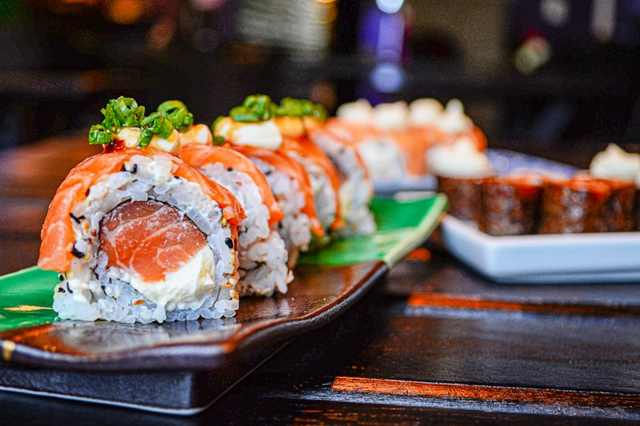

Balancing Texture, Temperature & Umami
Our sushi chefs craft every roll and sashimi cut as an artistic composition. We source sustainably harvested line-caught Bluefin and Yellowfin Tuna, Scottish Salmon, Japanese Hamachi, and real King Crab.
Layered with house-infused white truffle oils, citrus yuzu ponzu, microgreens, and torched sweet reductions, each bite provides a symphony of contrasting textures and pure seafood umami.
Signature Sushi Masterpieces
Innovative flavor pairings created exclusively for our South Tryon lounge.
The Red Ginger Roll
Spicy tuna and creamy avocado inside, wrapped with fresh Scottish salmon, sliced pickled ginger, sweet unagi reduction, and microgreens.
The Tryon Street Roll
Crispy tempura shrimp and cream cheese rolled with spicy kani salad, topped with sliced ripe avocado, toasted sesame, and kabayaki drizzle.
Fire Dragon Roll
Spicy salmon and crisp cucumber draped with BBQ freshwater eel and avocado, flash-torched table-side with spicy aioli and unagi sauce.
Curated Sake & Cocktail Pairings
Elevate your sushi lounge experience with our premium beverage selection. From dry and crisp Junmai Ginjo sakes that cleanse the palate between rich salmon cuts to our signature Smoked Ginger Lychee Martini, our bar team curates pairings that complement each chef creation.